Inicio
Al abrir la app ves el alta de un partido nuevo. Arriba está tu perfil, el acceso a los campeonatos y el idioma. Si dejaste un partido sin terminar, aparece la tarjeta Partido en curso.
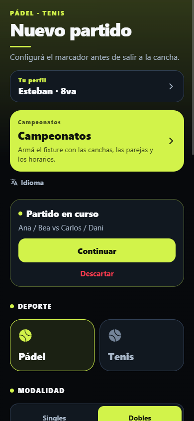
- Continuar vuelve al marcador tal como lo dejaste.
- Descartar borra ese partido en curso. Pide confirmación.
- Campeonatos abre la lista de torneos.
- Tu perfil es el nombre con el que te anotan y tu categoría.
Armar un partido
En la misma pantalla de inicio bajás hasta el formulario. Elegís deporte, si es singles o dobles, y los jugadores. Al final tocá Empezar partido.
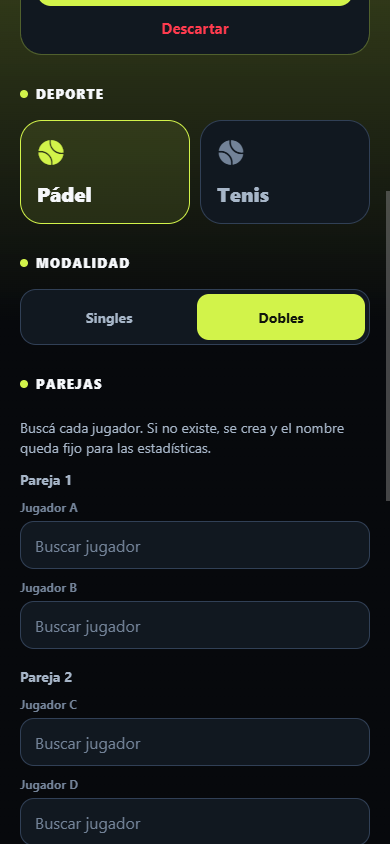
- Elegí Pádel o Tenis.
- Elegí Singles o Dobles. En dobles hay cuatro lugares: pareja 1 (A y B) y pareja 2 (C y D).
- Tocá cada Buscar jugador y elegí a alguien de la lista, o cargalo si no está.
- Elegí la cantidad de sets, qué pasa en 40 iguales, el desempate y quién saca.
- Tocá Empezar partido.
Si ya hay un partido en curso, empezar otro pide confirmación: el marcador anterior se descarta.
Jugadores
Al tocar Buscar jugador se abre un desplegable. Arriba está Agregar jugador y debajo la lista, ordenada, con la categoría y la estrella si tiene títulos. Escribí para filtrar. Si el nombre no existe, el botón pasa a ser Agregar jugador «nombre».
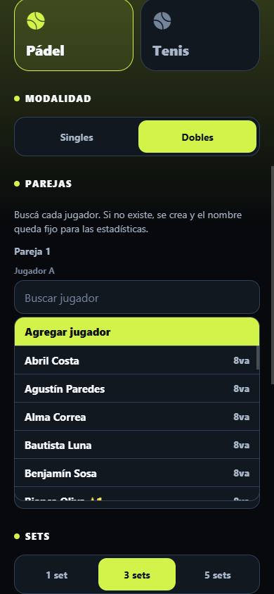
Si el jugador es nuevo, el formulario pide nombre, apellido, teléfono y categoría. Solo el nombre es obligatorio. El teléfono es el de WhatsApp, con código de país, y se usa después para avisar los horarios del torneo.
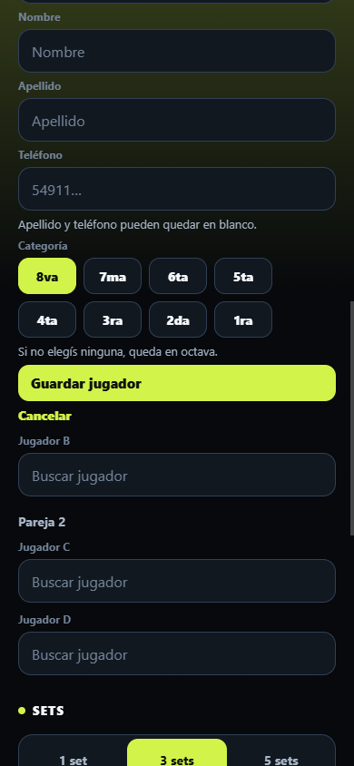
El mismo nombre y apellido, escrito igual, reutiliza al jugador que ya estaba. No se duplica.
Reglas del marcador
Estas opciones están al armar el partido y también en Editar si el partido ya empezó. Cambiarlas no reinicia el marcador ni el reloj.
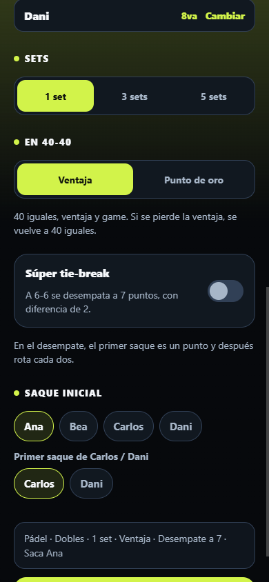
Sets
Podés jugar al mejor de 1, 3 o 5 sets. Un set se gana con 6 games y dos de diferencia, o 7-5, o 7-6 en el desempate.
En 40 iguales
- Ventaja: 40 iguales, ventaja y game. Si se pierde la ventaja, se vuelve a 40 iguales.
- Punto de oro: en 40 iguales el siguiente punto gana el game.
Desempate a 6-6
- Con el súper tie-break apagado, se juega a 7 puntos, con diferencia de 2.
- Con el interruptor prendido, se juega a 11 puntos, con diferencia de 2.
El set queda como 7-6 y, entre paréntesis, los puntos del que perdió el desempate. El último set del partido es un set completo: no se reemplaza por un desempate suelto. En el desempate, el primer saque es un punto y después rota cada dos.
Saque
Elegí quién saca el primer punto y, en dobles, quién recibe ese primer saque del otro lado. Durante el partido el cartel de arriba dice quién está sacando.
Durante el partido
Cada lado es una pareja. El número grande es el punto del game (0, 15, 30, 40). Abajo están los games del set. El pastille de arriba a la derecha de cada nombre es la cantidad de sets ganados.
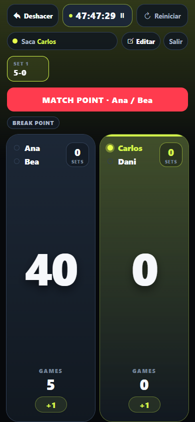
- +1 suma un punto. Si cierra el game, el set o el partido, el marcador avanza solo.
- Deshacer vuelve al punto anterior.
- Reiniciar pone el partido en cero. Pide confirmación. El reloj también vuelve a empezar.
- Editar abre nombres, saque y reglas sin tocar el tanteador.
- Salir vuelve al inicio y deja el partido en curso. Continuar lo retoma.
La barra roja avisa match point, set point o break point cuando corresponde. El reloj de arriba cuenta el tiempo que el partido lleva abierto. La pantalla no se apaga mientras estás en el marcador.
Cuando termina el partido, la app muestra el resumen con el resultado. Desde ahí podés compartir o volver al inicio.
Corregir el partido
Desde el marcador, Editar abre los mismos datos del alta. Sirve si te equivocaste de nombre, de saque o de regla a mitad del partido. El tanteador y el tiempo no se reinician. Cancelar descarta los cambios de esa pantalla.
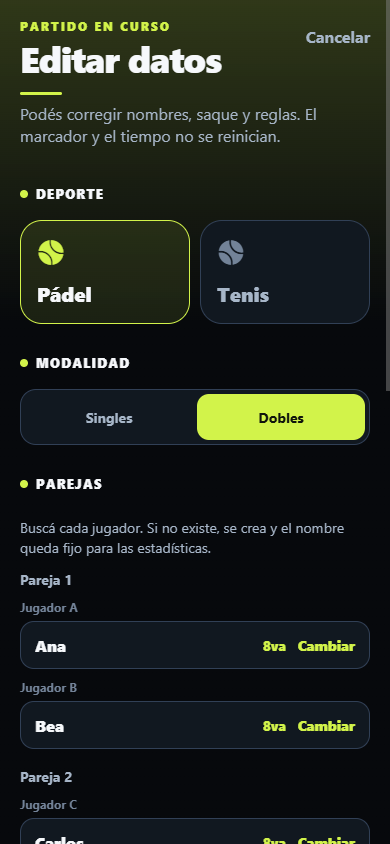
Campeonatos
En Campeonatos ves los torneos activos. Cada fila dice la categoría, cuántas parejas hay, cuántas canchas y cuántos partidos. Tocá uno para abrir el cuadro.
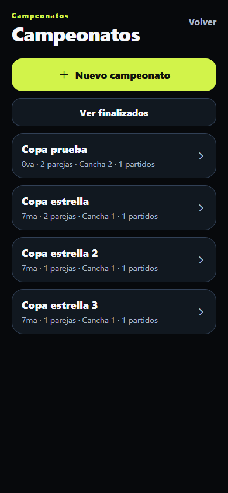
Finalizados
Ver finalizados muestra los torneos que cerraste. Siguen con todos los resultados. Ver activos vuelve a la lista de todos los días.
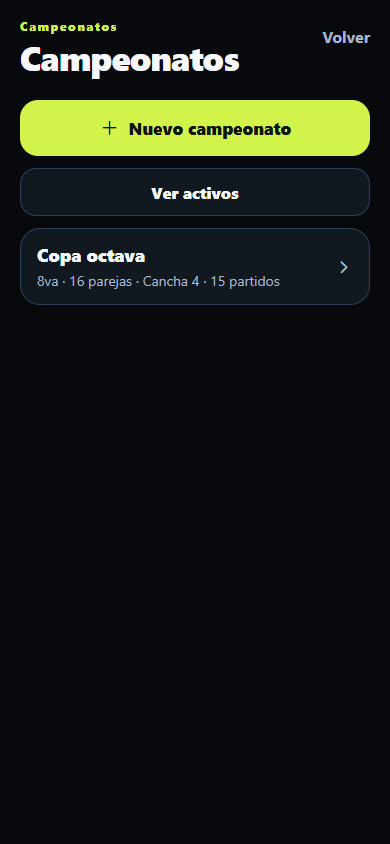
Dentro del torneo, Finalizar torneo pregunta si querés cerrarlo. Si confirmás, deja de figurar entre los activos y los resultados quedan guardados. Volver a activo lo devuelve a la lista principal. Eliminar lo borra.
El cuadro
Al entrar a un campeonato ves el cuadro, no la lista de gente. En eliminación, cada ronda está al lado de la anterior. Deslizá hacia la izquierda para ver cuartos, semis y la final. El ganador de cada partido pasa a la ronda siguiente.
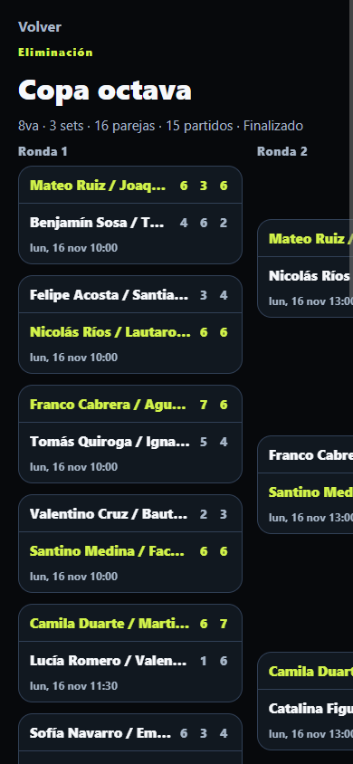
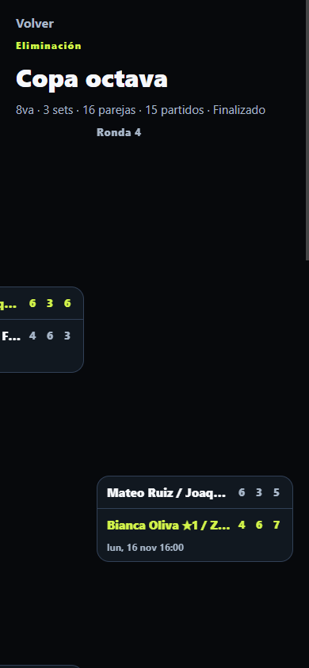
En todos contra todos el cuadro es una tabla: cada pareja juega contra las demás.
Cargar un resultado
Tocá un partido del cuadro. Se abre el editor: horario, un renglón por set y los botones de ganador. En un torneo al mejor de 3 sets no se pueden cargar más de 3.
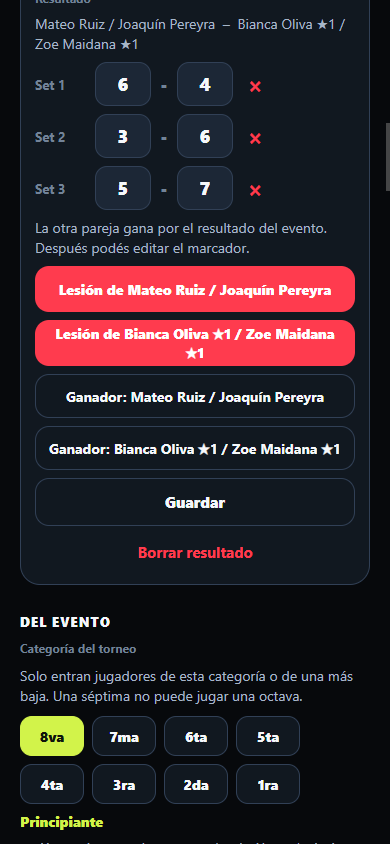
Un set es válido si es 6-0, 6-1, 6-2, 6-3, 6-4, 7-5 o 7-6. También vale un set más largo si el ganador llega al menos a 7, el perdedor al menos a 5 y la diferencia es exactamente 2 (7-5, 8-6, 9-7…). La app rechaza un 6-5, un 7-4 o un tanteador que no coincide con el ganador que marcaste.
- Lesión da el partido por ganado a la otra pareja, con el resultado de lesión del torneo (por defecto 6-3, 6-3). Después podés corregir el marcador.
- Ganador confirma quién pasó. Tiene que coincidir con los sets.
- Guardar anota el resultado y arma la siguiente ronda si ya se puede.
- Borrar resultado deja el partido pendiente otra vez.
El horario se elige entre los turnos del día. Si no hay uno, queda Sin horario.
Participantes y WhatsApp
Bajá en la ficha del torneo. Ahí están la categoría, cuántos sets se juegan, las canchas, el resultado de una lesión y el link de la app. Guardar aplica esos cambios.
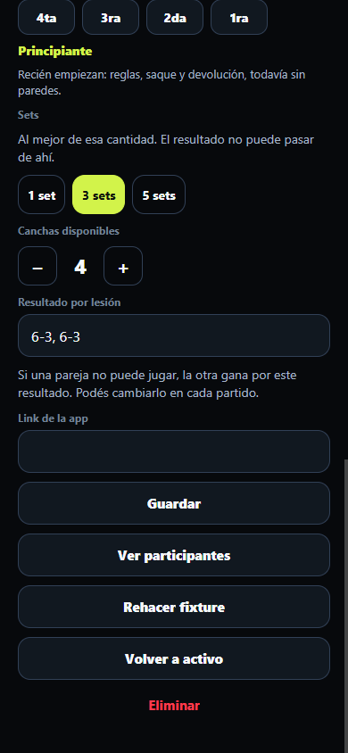
Ver participantes abre el aviso por WhatsApp y las parejas. Ocultar participantes las cierra de nuevo, para que el cuadro no quede tapado por una página larga.
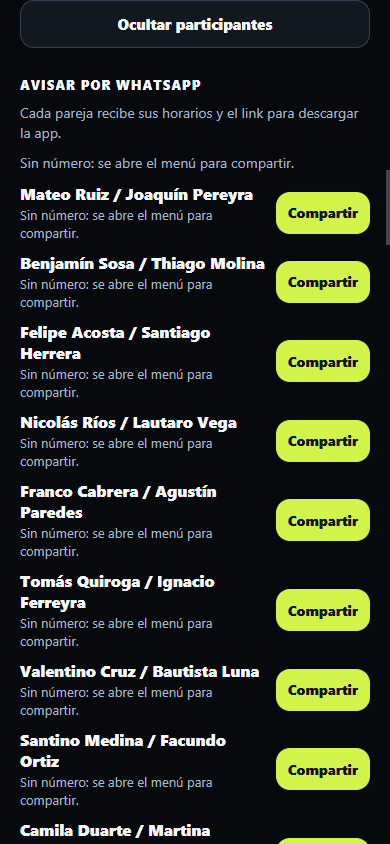
Compartir arma un mensaje con los horarios de esa pareja y el link para bajar la app. Si el jugador tiene teléfono cargado, abre WhatsApp con ese número. Si no, dice que no hay número y abre el menú para compartir.
En cada pareja podés cambiar jugadores, sacar la pareja, anotar un horario en el que no pueden jugar y, abajo de todo, Agregar pareja. Rehacer fixture vuelve a armar el cuadro con las parejas actuales. Pedí confirmación antes: reemplaza el cuadro que ya estaba.
Nuevo campeonato
En la lista, Nuevo campeonato. Poné el nombre, la categoría, cuántas canchas hay, el formato y los sets. Después cargá las parejas y tocá Armar fixture.
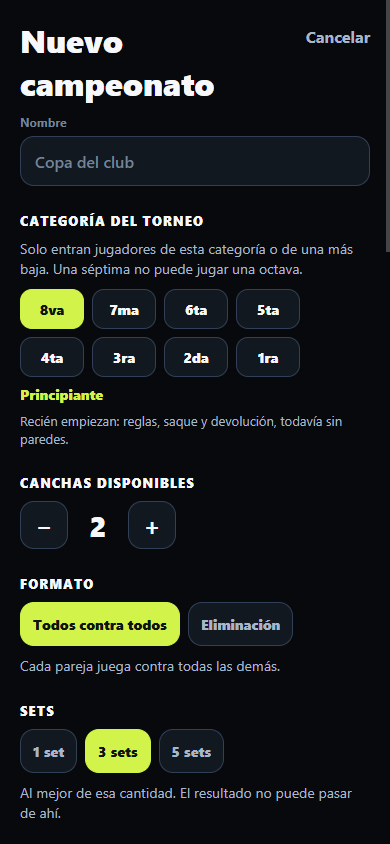
- Todos contra todos: cada pareja juega contra todas las demás.
- Eliminación: el que pierde queda afuera. Hacen falta al menos dos parejas.
- Canchas disponibles reparte los partidos en paralelo. Con 4 canchas, hasta cuatro partidos salen al mismo turno.
- La categoría del torneo deja entrar a jugadores de esa categoría o de una más baja. Una 7ma no puede jugar una 8va. Una 8va sí puede jugar una 7ma.
Si alguien no puede anotarse, el campo lo dice con su nombre: es de una categoría mejor que la del torneo.
Tu perfil
Tocá la tarjeta Tu perfil en el inicio. El nombre es el que usan los torneos para reconocerte. El teléfono es el de WhatsApp. La categoría es la tuya: si no elegís ninguna, queda en octava.
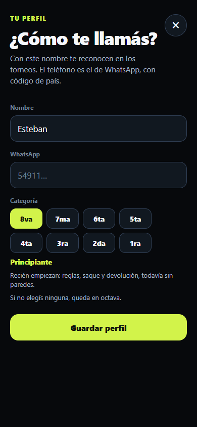
Cuando ganás un torneo, la categoría puede subir sola. Si ya subiste, no podés volver a una categoría más baja: el botón queda bloqueado.
Idioma
En el inicio, Idioma abre la lista. El castellano es el que viene elegido. También están inglés, portugués, italiano, francés y árabe. Los códigos de categoría (8va, 7ma, 6ta…) se escriben igual en todos.
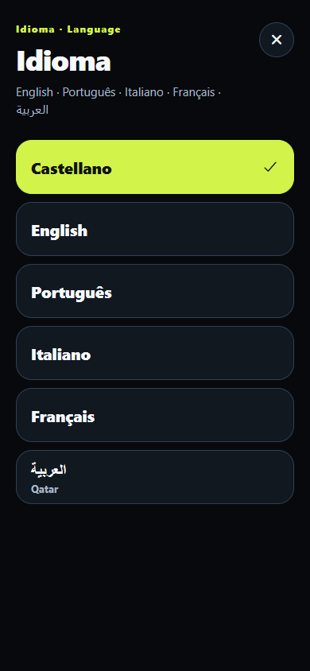
Categorías y estrellas
El número más chico es el mejor nivel. 8va es principiante y 1ra es el máximo.
| Categoría | Nivel | Qué significa |
|---|---|---|
| 8va | Principiante | Recién empiezan: reglas, saque y devolución, todavía sin paredes. |
| 7ma | Inicial | Peloteos cortos, globo y rebotes simples en la pared de fondo. |
| 6ta | Intermedio bajo | Más regularidad, control básico en la red y primeras bandejas. |
| 5ta | Intermedio | Buen dominio del rebote, incluso doble pared, y más ritmo. |
| 4ta | Intermedio alto | Técnica completa, lectura táctica y paso de defensa a ataque. |
| 3ra | Avanzado | Pelota rápida, pocos errores y definición constante en la red. |
| 2da | Competitivo | Nivel semi-profesional, torneos provinciales y nacionales. |
| 1ra | Máximo nivel | La élite local y nacional, incluido el circuito profesional. |
Los dos jugadores de la pareja que gana el torneo suman un título en la categoría de ese torneo. La estrella ★N es la cantidad de títulos en la categoría actual. Con tres títulos en la misma categoría se sube un escalón: de 8va a 7ma, de 7ma a 6ta, y así hasta 1ra. En 1ra la estrella sigue contando y no hay otra categoría a la que subir. Cerrar el torneo con Finalizar no cambia las estrellas: ya se cuentan con el resultado de la final.
Dónde se guarda
Partidos, campeonatos, jugadores, el perfil y el idioma quedan en el teléfono, dentro de la app. No hace falta una cuenta ni internet para usar el marcador. Si desinstalás la app o borrás sus datos, esa información se pierde.
El celular y el navegador de la computadora no comparten la lista. Un campeonato que ves en uno no aparece en el otro hasta que lo cargues ahí.
Esta guía corresponde a la versión 1.1.0 de la app.